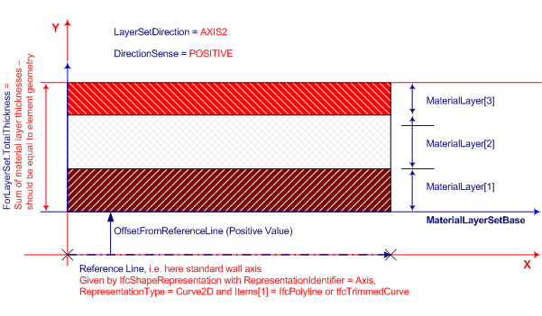
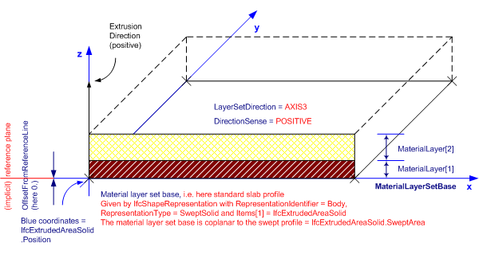
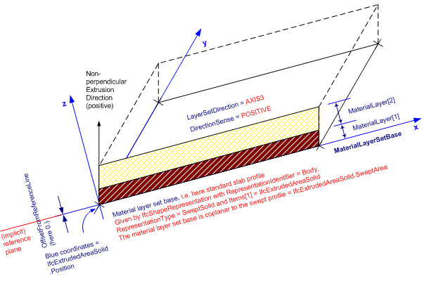

8.10.3.8 IfcMaterialLayerSetUsage
8.10.3.8.1 Semantic definition
The IfcMaterialLayerSetUsage determines the usage of IfcMaterialLayerSet in terms of its location and orientation relative to the associated element geometry. The location of material layer set shall be compatible with the building element geometry (that is, material layers shall fit inside the element geometry). The rules to ensure the compatibility depend on the type of the building element.
The IfcMaterialLayerSetUsage is always assigned to an individual occurrence object (and only to relevant subtypes of IfcElement). The IfcMaterialLayerSet, referenced by ForLayerSet, can however be shared among several occurrence objects. If the element type is available (in other words, an instance of the relevant subtype of IfcElementType exists), then the IfcMaterialLayerSet can be assigned to the element type. The assignment between a subtype of IfcElement and the IfcMaterialLayerSetUsage is handled by IfcRelAssociatesMaterial.
{ .use-head} Attribute use definition
The IfcMaterialLayerSetUsage is primarily intended to be associated with planar building elements having a constant thickness. With further agreements on the interpretation of LayerSetDirection, the usage can be extended also to other cases, for example to curved building elements, provided that the material layer thicknesses are constant.
Generally, an element may be layered in any of its primary directions, denoted by its x, y or z axis. The geometry use definitions at each specific type of building element will determine the applicable LayerSetDirection.
The following examples illustrate how the IfcMaterialLayerSetUsage attributes (LayerSetDirection, DirectionSense, OffsetFromReferenceLine) can be used in different cases. Normative material use definitions are documented at each element (how these shall be used).
Figure A shows an example of the use of IfcMaterialLayerSetUsage aligned to the axis of a wall.

Figure B shows an example of the use of IfcMaterialLayerSetUsage aligned to a slab.

Figure C shows an example of the use of IfcMaterialLayerSetUsage aligned to a roof slab with non-perpendicular extrusion.

8.10.3.8.2 Entity inheritance
8.10.3.8.3 Attributes
| # | Attribute | Type | Description |
|---|---|---|---|
| IfcMaterialUsageDefinition (1) | |||
| AssociatedTo | SET [1:?] OF IfcRelAssociatesMaterial FOR RelatingMaterial |
Use of the IfcMaterialUsageDefinition subtypes within the material association of an element occurrence. The association is established by the IfcRelAssociatesMaterial relationship. |
|
| Click to show 1 hidden inherited attributes Click to hide 1 inherited attributes | |||
| IfcMaterialLayerSetUsage (5) | |||
| 1 | ForLayerSet | IfcMaterialLayerSet |
The IfcMaterialLayerSet set to which the usage is applied. |
| 2 | LayerSetDirection | IfcLayerSetDirectionEnum |
Orientation of the material layer set relative to element reference geometry. The meaning of the value of this attribute shall be specified in the geometry use section for each element. For extruded shape representation, direction can be given along the extrusion path (e.g. for slabs) or perpendicular to it (e.g. for walls). |
| 3 | DirectionSense | IfcDirectionSenseEnum |
Denotes whether the material layer set is oriented in positive or negative sense along the specified axis (defined by LayerSetDirection). "Positive" means that the consecutive layers (the IfcMaterialLayer instances in the list of IfcMaterialLayerSet.MaterialLayers) are placed face-by-face in the direction of the positive axis as established by LayerSetDirection: for AXIS2 it would be in +y, for AXIS3 it would be +z. "Negative" means that the layers are placed face-by-face in the direction of the negative LayerSetDirection. In both cases, starting at the material layer set base line. |
| 4 | OffsetFromReferenceLine | IfcLengthMeasure |
Offset of the material layer set base line (MlsBase) from reference geometry (line or plane) of element. The offset can be positive or negative, unless restricted for a particular building element type in its use definition or by implementer agreement. A positive value means, that the MlsBase is placed on the positive side of the reference line or plane, on the axis established by LayerSetDirection (in case of AXIS2 into the direction of +y, or in case of AXIS3 into the direction of +z). A negative value means that the MlsBase is placed on the negative side, as established by LayerSetDirection (in case of AXIS2 into the direction of -y). |
| 5 | ReferenceExtent | OPTIONAL IfcPositiveLengthMeasure |
Extent of the extrusion of the elements body shape representation to which the IfcMaterialLayerSetUsage applies. It is used as the reference value for the upper OffsetValues[2] provided by the IfcMaterialLayerWithOffsets subtype for included material layers. |
8.10.3.8.4 Formal representation
ENTITY IfcMaterialLayerSetUsage
SUBTYPE OF (IfcMaterialUsageDefinition);
ForLayerSet : IfcMaterialLayerSet;
LayerSetDirection : IfcLayerSetDirectionEnum;
DirectionSense : IfcDirectionSenseEnum;
OffsetFromReferenceLine : IfcLengthMeasure;
ReferenceExtent : OPTIONAL IfcPositiveLengthMeasure;
END_ENTITY;